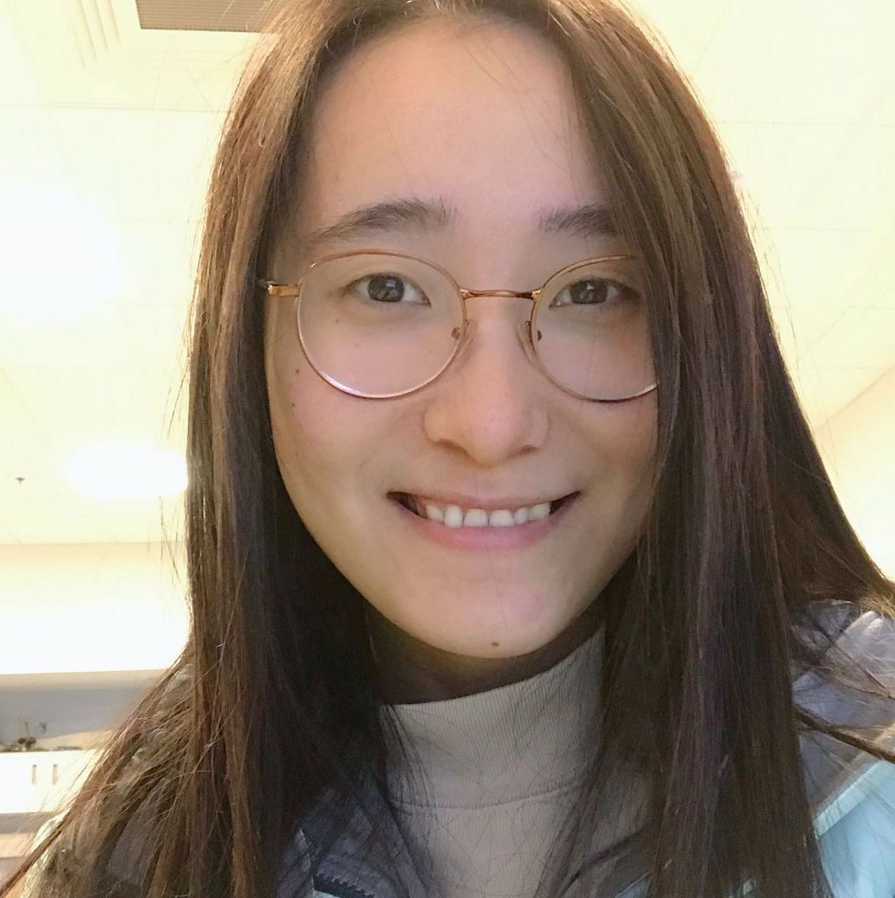

Huining Li

Huining Li
About Me
About Me
I will be joining the Computer Science Department at NC State University as an Assistant Professor in Fall 2024. I am looking for highly motivated Ph.D. students/summer interns/visiting students to join my lab.
I received my Ph.D. degree from the Department of Computer Science and Engineering, University at Buffalo, working with Dr. Wenyao Xu. My research interest lies broadly in mobile computing, internet-of-things, and cybersecurity. Especially, my recent focus is on applying research advancement to the field of mobile health (a.k.a, mHealth). My projects have involved developing mHealth systems to assist with chronic wound care, Parkinson’s disease management, and mental health therapy. Within these research projects, I have explored and invented a set of technical innovations such as precise measurement in biomarkers, high accessibility in mHealth service, and fairness in privacy protection. My work has received three Best Paper Awards (SenSys’19, BodyNet’21, and ICHI’22), and one Best Paper Candidate(SenSys’22). Recently, I was named among the EECS Rising Stars in 2023.
News
[Event]
Huining Li passed dissertation defense. Thanks to all the people who have supported me to finish my Ph.D. degree!
(2024/05) [Award]
Huining is named among the EECS Rising Stars in 2023.
(2023/08) [Award]
Our MindVoice project won the IEEE EPICS (Engineering Projects in Community Service) award. The project will enhance voice user interface for older adults with cognitive disabilities.
(2023/03) [Service]
Huining served as the research project mentor at Computer Science Club in Williamsville East High School.
(2022/12) [Award]
Our work “Hearing Heartbeat from Voice: Towards Next Generation Voice-User Interfaces with Cardiac Sensing Function” is selected as one of the 2022 ACM SenSys Best Paper Award Candidates (7 out of 209).
(2022/11) [Award]
Our interdisciplinary work on smartphone-based ulcer care won the 2022 ACM SenSys Best Poster Paper Award Runner-up (2 out of 35).
(2022/11) [Activity]
Huining gave a Lightning Talk about a Privacy-Preserving Mobile Companion Diagnostic Tool for Treatment Effectiveness Monitoring at NSF-NIH Smart and Connected Health workshop.
(2022/10) [Award]
Huining received the IEEE TCI (Technical Committee on the Internet) Travel Award from IEEE/ACM CHASE conference.
(2022/09)
Selected Publications
Huining Li, Xiaoye Qian, Ruokai Ma, Chenhan Xu, Zhengxiong Li, Dongmei Li, Feng Lin, Ming-Chun Huang, Wenyao Xu, “TherapyPal: Towards a Privacy-Preserving Companion Diagnostic Tool based on Digital Symptomatic Phenotyping”, ACM International Conference on Mobile Computing and Networking (MobiCom’23), Madrid, Spain, October 2023. [PDF]
Huining Li, Huan Chen, Chenhan Xu, Zhengxiong Li, Hanbin Zhang, Xiaoye Qian, Dongmei Li, Ming-Chun Huang, Wenyao Xu, “NeuralGait: Assessing Brain Health using Your Smartphone”, ACM on Interactive, Mobile, Wearable and Ubiquitous Technologies (IMWUT/UbiComp’22), Volume 6, Number 4, December 2022. [PDF]
Huining Li, Chenhan Xu, Aditya Singh Rathore, Zhengxiong Li, Hanbin Zhang, Chen Song, Kun Wang, Lu Su, Feng Lin, Kui Ren, Wenyao Xu, “VocalPrint: Exploring A Resilient and Secure Voice Authentication via mmWave Biometric Interrogation”, ACM Conference on Embedded Networked Sensor Systems (SenSys’20), Yokohama, Japan, November 2020. [PDF]